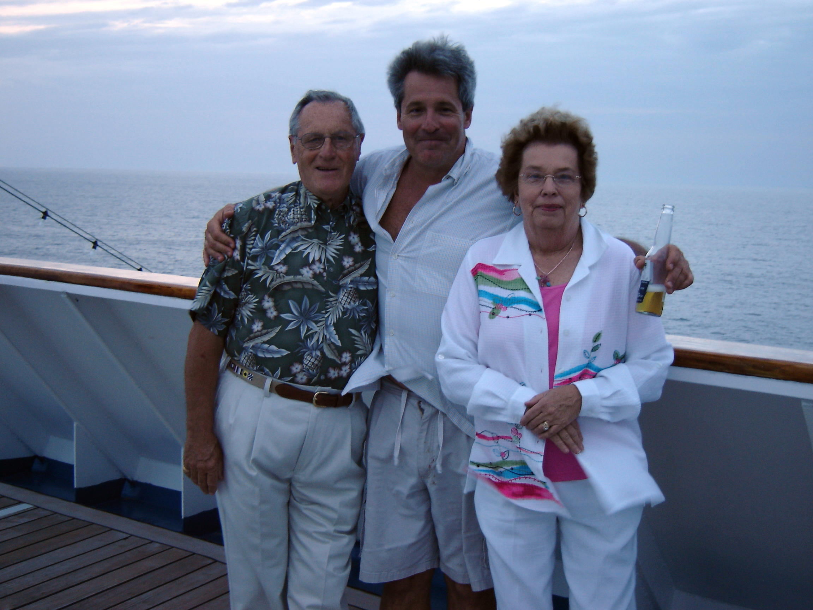
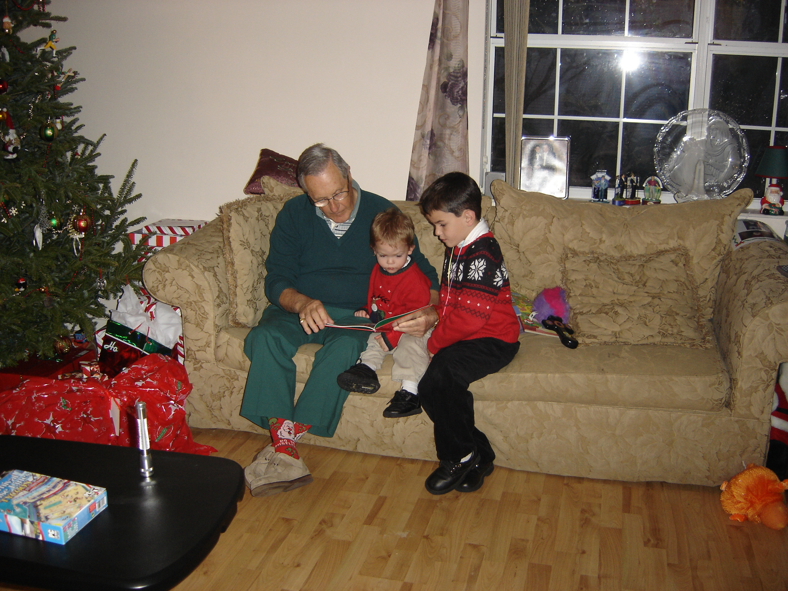
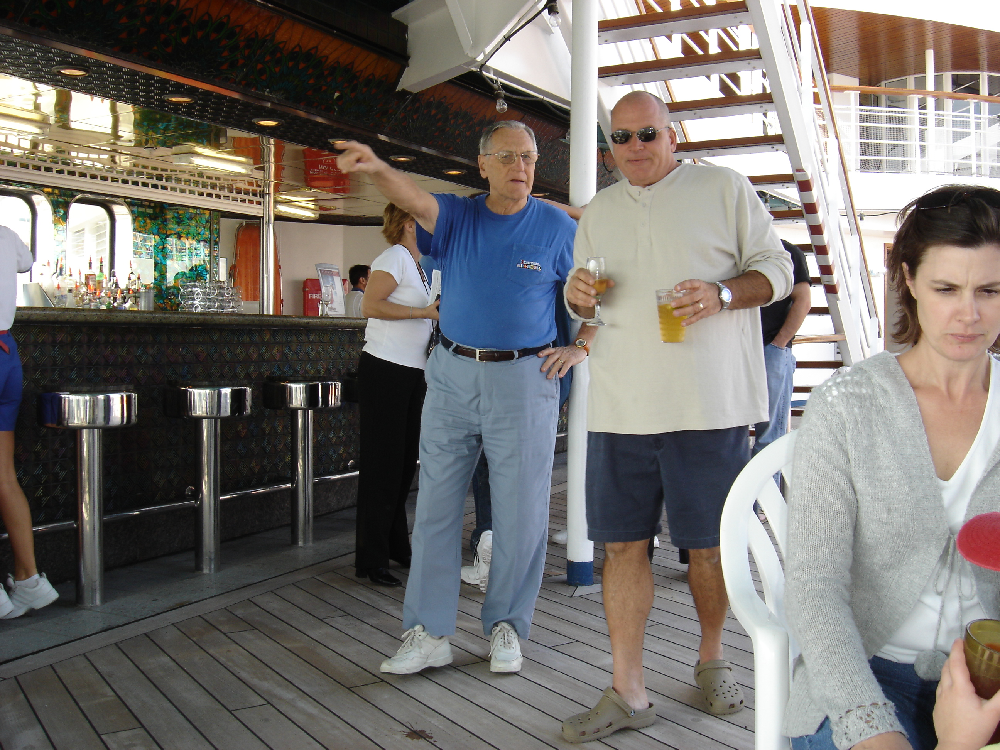

Walter Nullet was born on October 5, 1929 in Queens, New York. He lived a life of epic proportions spanning nearly 10 decades. He was a man of great character with a distinct commitment to serving his country, community and family. For his country, he served in the U.S. Army during the Korean War. He was based in El Paso, Texas where he trained soldiers preparing to fight overseas. For his community, he served 34 years with the New York Police Department as a homicide detective. Further, he volunteered substantial time as a resource officer at Freeport High School in Freeport, New York, where he lived and raised his family until his retirement. Lastly, and most importantly, he was a committed husband, father, grandfather, and great-grandfather. He always treated his family with respect and admiration, and ensured they had good and fruitful lives. While a short paragraph cannot possibly be exhaustive of the achievements of Walter Nullet, I hope it has conveyed the substantial impact this man has had on so many people.



Walter’s passion for the University of Notre Dame’s football program deserves it’s own section on this page. A true die-hard – he raised his sons and grandsons to cheer on the Irish as well. Even though two of his grandsons attended the University of Florida and Florida State University respectively, they still cheered for Notre Dame along side their grandfather. In addition to Notre Dame football, Walter enjoyed rooting for their basketball team (men and women’s), Lacrosse, and honestly, whatever sport the college was playing as long as it was broadcast somewhere. Family and friends have countless fond memories of cheering on the Irish along side Walter either in his home, at South Bend, or wherever he would travel to watch the Irish play ball. Beyond Notre Dame, Walter was an avid fan of the New York Yankees and the New York Giants.